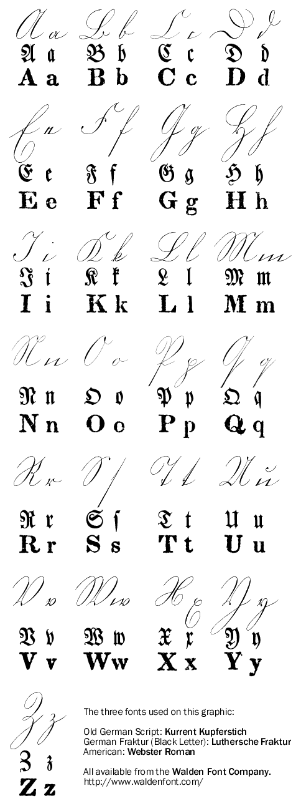
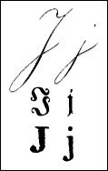

The Old German Script illustrated on this page
is of a handwriting style used in the 1800s. It was replaced by a different style
scrip named Sütterlin. Created by a Viennese graphic artist named Ludwig Sütterlin,
the new script became standard in Prussian schools by 1915 and through out Germany by 1934, it
lasted until 1941.

The Elusive Letter “J”
It was not until medieval times that
the “J” appeared. It was the last
addition to our modern alphabet. Scholars were slow to add the letter to dictionaries.
The letter set above is based on an old American printed example of Old Germany Script.
The original omitted the letter “J” so we have included it as a separate
image.
The use of the “J” did not
take Germany by storm.
